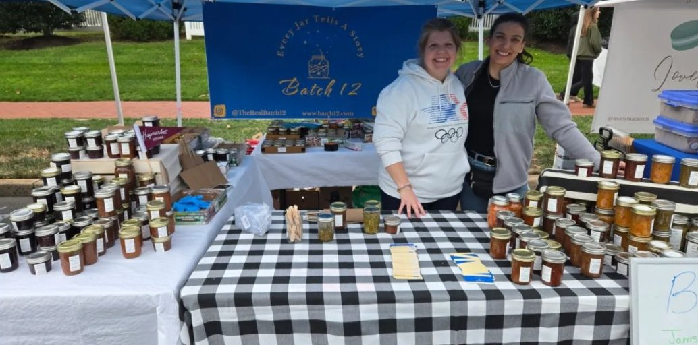

Our story
From a small California town to a Haymarket kitchen, one batch at a time.

A kitchen calendar marked by the harvest
Kristen grew up in a small town in California where everyone knew how to “put up” food. You could mark your calendar by the monthly harvest, and the preserves, jams, pickles and salsas that went with it.
Since moving to Virginia in 2019, she has carried on the tradition, making small, artisan, hand-tended batches.
As a kid, she looked forward to the sweet stuff. As an adult, she relishes (pun intended) the chance to explore new flavors and go on a taste adventure!
From one kitchen to the market table
- CAGrowing upLearning to “put up” food in a small California town.
- 2019Moving to VirginiaBringing the tradition to a new kitchen in Haymarket.
- ✦Neighbors ask for moreSmall batches sold around the neighborhood.
- VALocal partnersWorking with Virginia farmers and orchards.
We heard this for years
Eat good food.
- Local, premium ingredients harvested for peak flavor.
- Never any artificial preservatives or additives.
- High-quality produce means added salt and sugar stay low, so the true flavors can sing.
Grown by our Virginia farm partners
Using local produce means supporting local Virginia farmers. A few of the farms where our ingredients are grown:
Gathering Springs Farm
Middleburg, VA
Heirloom tomatoes & poblanos
Out on a Limb Orchard & Vineyard
Manassas, VA
Apples
Ignacio’s Produce
Westmoreland County, VA
Green beans
Wegmeyer Farms
Hamilton, VA
Strawberries
Crooked Run Orchard
Purcellville, VA
Blackberries
Hartland Orchard
Markham, VA
“Every recipe carries a piece of my heart, a memory, or a lesson learned from the generations before me. When you open a jar from Batch 12, you're tasting a labor of love.”
Join the Batch 12 list
Get an email when new flavors are ready, when we’ll be at the market, and when an Instagram flash sale starts. No spam, just jars.